A small bedroom does not need more space to feel cosy — it needs warmth, softness and light used well. In a small room the bed is the centre of everything, so most cosy changes are small ones: a layer added to the bed, a warmer light beside it, a softer surface underfoot.
This list gathers 35 ideas that work in genuinely small bedrooms, from layered bedding and fairy lights to smart storage that hides the clutter cosiness cannot survive. Pick two or three that suit your room and your budget, live with them, and add more only if the room still asks for it. The photos are decoration inspiration to help you picture each idea.
1. Layered Bedding with a Throw and Cushions
A small bed looks instantly cosier when the bedding is built in layers rather than pulled flat. Start with your usual duvet or comforter, fold a throw across the foot of the bed, and add two or three cushions in front of the pillows. Mixing one smooth fabric with one textured one — linen with a knit, cotton with a waffle weave — adds warmth without adding bulk, which matters when the bed fills most of the room.
2. Fairy Lights Above the Bed
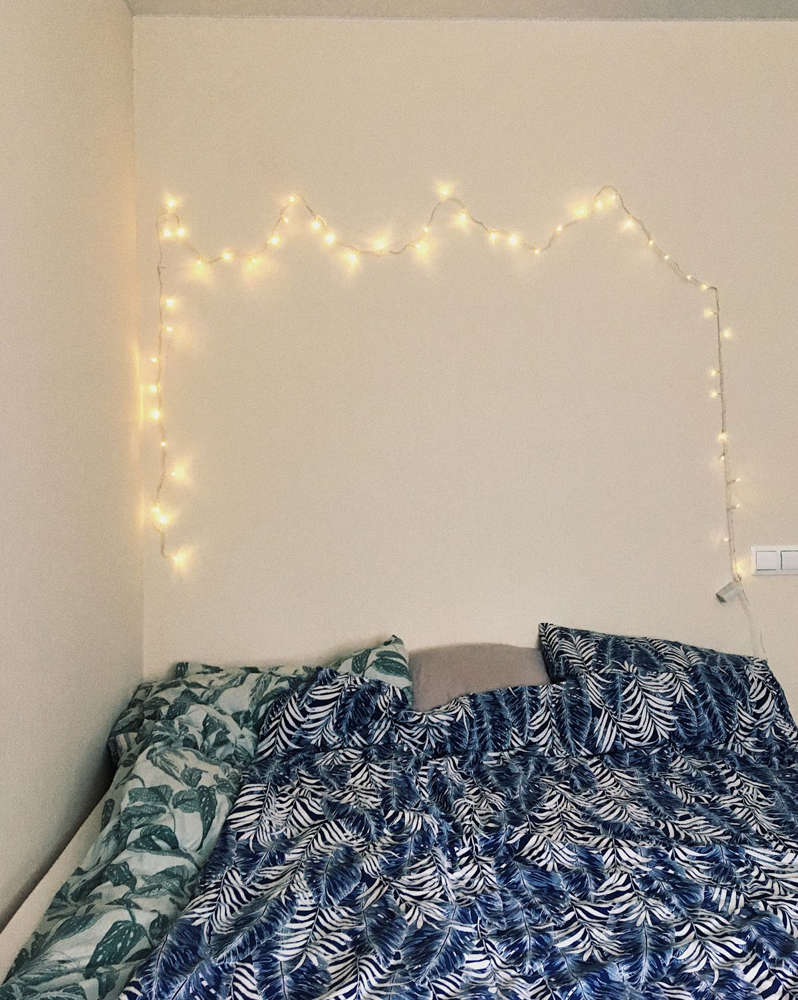
A short string of warm-white fairy lights draped along the headboard or the wall above the bed gives a small bedroom a soft evening glow. The tiny bulbs take up no space at all, which makes them perfect for rooms where a second lamp will not fit. Battery-powered strings avoid trailing cords, and warm light is the key detail — cool white light feels stark instead of cosy.
3. A Warm Bedside Lamp
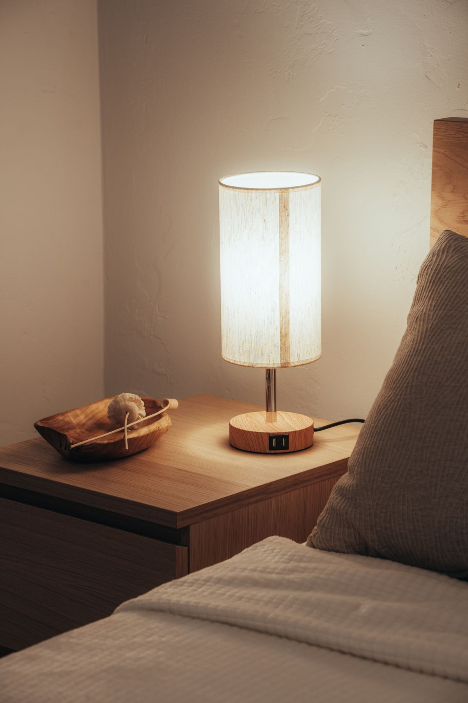
One small lamp with a fabric shade and a warm-toned bulb changes how a small bedroom feels after dark. The shade softens the light and spreads it gently, so the corner by the bed glows instead of glaring. If the nightstand is tiny, choose a lamp with a narrow base, and let it be the main evening light rather than the ceiling light.
4. A Cosy Reading Corner
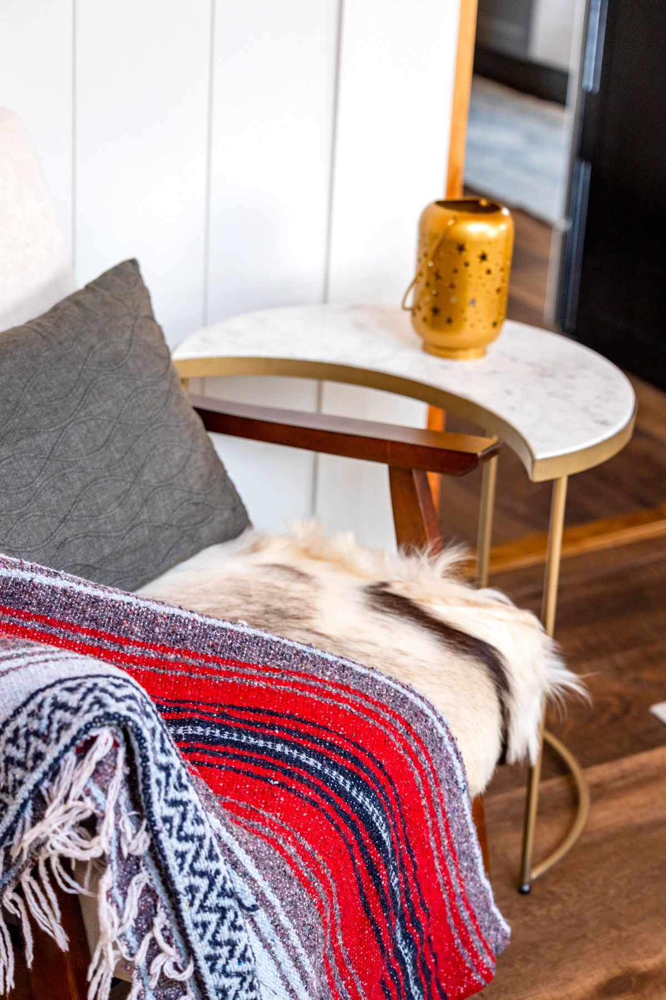
Even a small bedroom can hold a reading corner if the chair is compact: one small armchair or a cushioned seat, a throw over the arm, and a cushion behind your back. Place it in the corner nearest the window or the lamp so the light falls where you need it. The corner gives the room a second purpose and makes the bed feel like it is only for sleeping.
5. A Gallery Wall Above the Bed
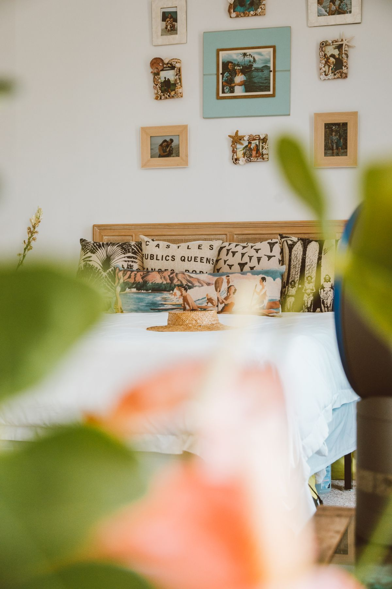
A small gallery wall above the bed uses the one stretch of wall a small bedroom can spare. Keep the frames light in colour and similar in style, mix two or three sizes, and plan the layout on the bed or floor before hanging anything. Photos, simple prints and postcards all work — what makes it feel cosy is the personal mix, not matching art.
6. Under-Bed Storage Boxes
The space under the bed is the largest storage spot in a small bedroom, and flat lidded boxes are the easiest way to use it. Choose low boxes that slide freely, and keep them for things you do not need daily — spare bedding, out-of-season clothes, extra towels. Matching boxes look calm when glimpsed under the bed, and lids keep the contents dust-free and out of sight, which keeps the room feeling restful.
7. Floating Shelves Beside the Bed
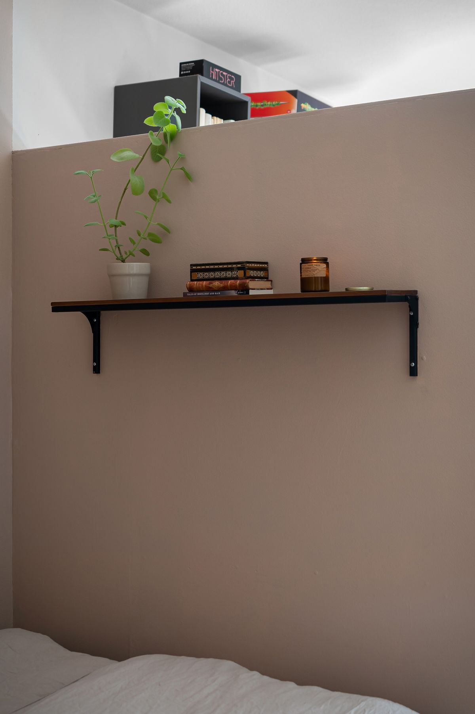
A floating shelf beside or above the bed replaces the storage a bigger nightstand would give, without touching the floor. Use it for the book you are reading, a small plant, a glass of water and one or two favourite objects. Keep the shelf only partly filled — a little empty space is what makes it look styled rather than crowded.
8. A Soft Rug Beside the Bed
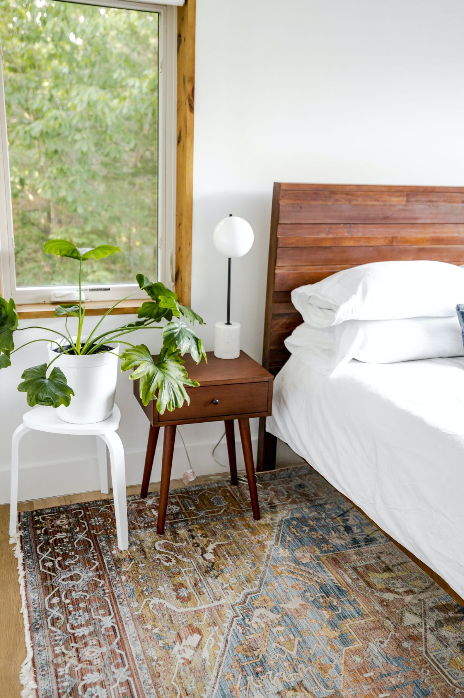
A soft rug placed where your feet land first thing softens both the look and the feel of a small bedroom. Choose a size that fits the strip beside the bed without sliding under other furniture, and a texture you want to step on. A pale or warmly patterned rug also breaks up a plain floor and makes the sleeping zone feel defined.
9. Cosy Curtains That Frame the Window
Full-length curtains in a warm, soft fabric make a small bedroom feel finished and sheltered. Hang them so they frame the window rather than cover it, and let them fall in soft folds to the floor or the sill. Heavier curtains add a sense of enclosure in the evening, which is exactly the feeling a cosy bedroom needs, and they soften hard window edges during the day.
10. An Upholstered or Cushioned Headboard
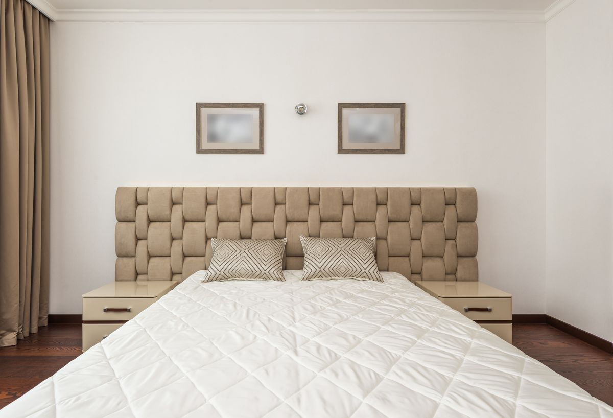
A padded, upholstered headboard gives a small bed a soft, comfortable centre and makes sitting up in bed far more pleasant. In a small room it also works as the room’s main decorative feature, so the other walls can stay simple. Neutral fabrics like beige, soft grey or warm white suit most bedding, and a cushioned panel or a simple padded board both do the job.
11. A Mirror That Bounces Light Around
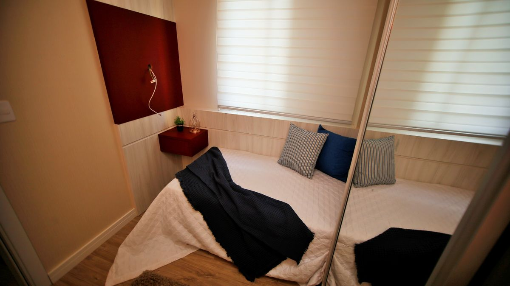
A mirror placed where it catches window light bounces that light into the darker corners of a small bedroom. A mirrored wardrobe door, a round mirror above a dresser, or a tall mirror leaning in a corner all work. Angle it toward something pleasant — the window, a plant, a tidy shelf — because a mirror doubles whatever it faces, and light walls reflected back make the room feel larger.
12. A Warm, Calm Colour Palette
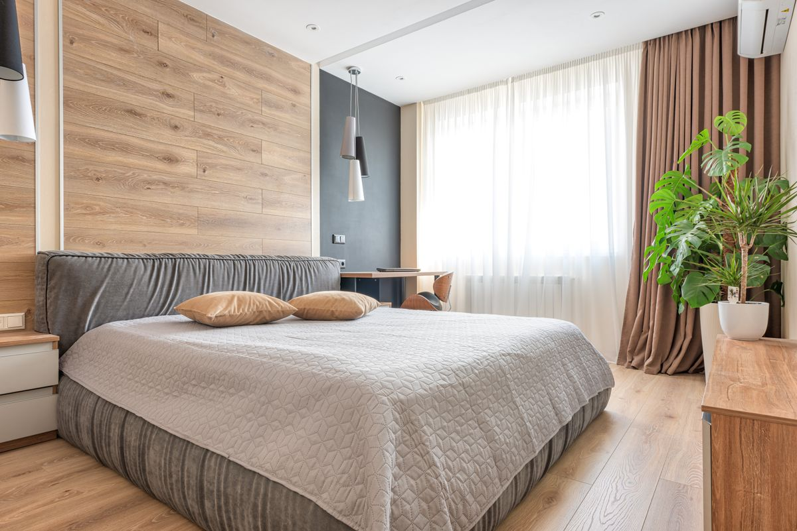
Cosiness in a small bedroom starts with colour discipline: choose two or three warm, calm tones and repeat them across the bedding, curtains, rug and cushions. Warm white, beige, soft taupe and muted terracotta or sage sit comfortably together and make a small room feel wrapped rather than boxed in. When every textile belongs to the same quiet palette, even a tiny room feels calm instead of busy.
13. Plants on the Windowsill
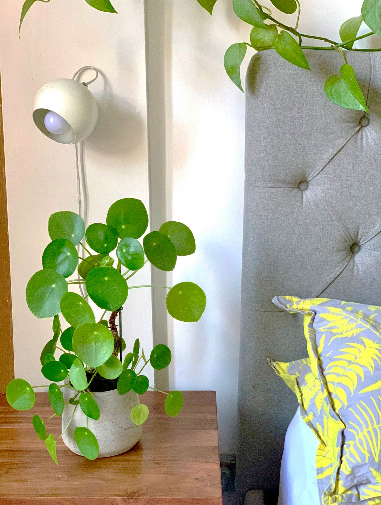
One or two small plants bring life to a small bedroom without asking for floor space. The windowsill is the natural spot — the light suits them and they soften the window frame — but a small pot on the nightstand or a shelf works just as well. Choose easy plants with soft foliage, and keep the pots in the same family of colours so the greenery reads as one calm detail.
14. Candlelight-Style Glow
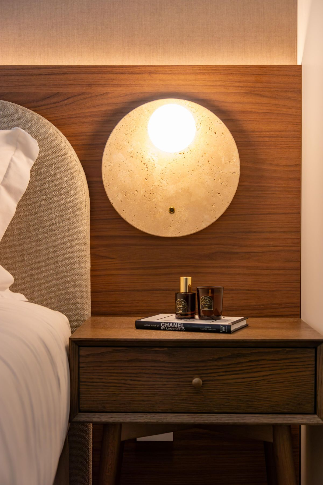
The warm, low flicker of candlelight is the quickest way to make a small bedroom feel calm in the evening. A candle in a glass jar on the nightstand, or a flameless candle with a realistic flicker, gives that same gentle glow. Keep flames well away from bedding and curtains, never leave a real candle burning while you sleep, and let the soft light — not the scent or the styling — do the work.
15. Wall Sconces That Save Table Space
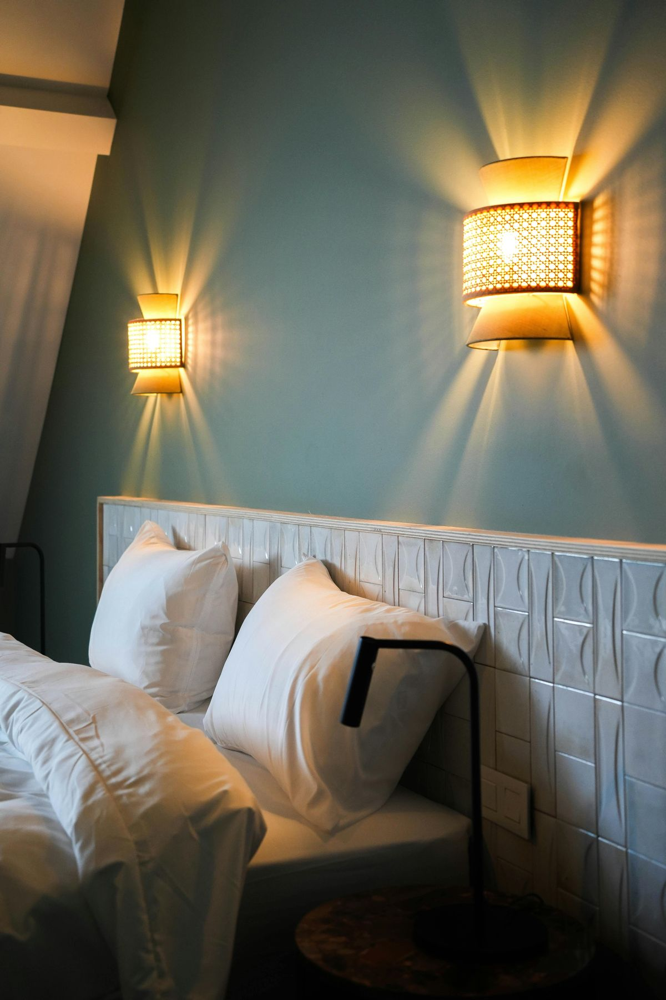
Wall sconces are made for small bedrooms: they give you bedside light while leaving the nightstand completely free. Fit one on each side of the bed if two people read there, or a single one on your side. Woven, fabric or frosted shades keep the light warm and diffused, and plug-in sconces with a cord avoid any rewiring.
16. A Small Bedside Book Stack
A small stack of books on the nightstand is both useful and decorative. Two or three books with covers in calm colours, topped with your reading glasses or a small clock, make the bedside feel personal and settled. Keep the stack short so it stays tidy, and swap the top book as your reading changes — it is the easiest styling update in the room.
17. A Chunky Knit Throw
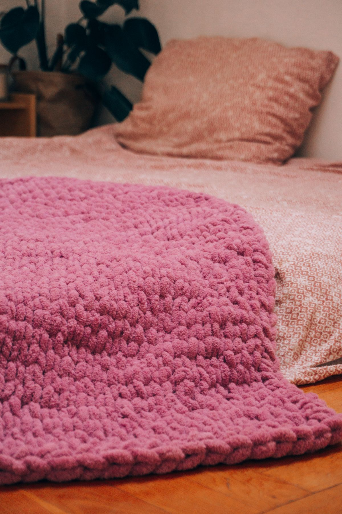
A chunky knit throw is texture you can see from the doorway. Draped across the foot of the bed or folded over a chair, its oversized stitches add instant warmth to a small room and invite you to pull it over your legs. One throw in a warm neutral or a soft seasonal colour is enough — the knit itself is the decoration.
18. A Draped Canopy Over the Bed
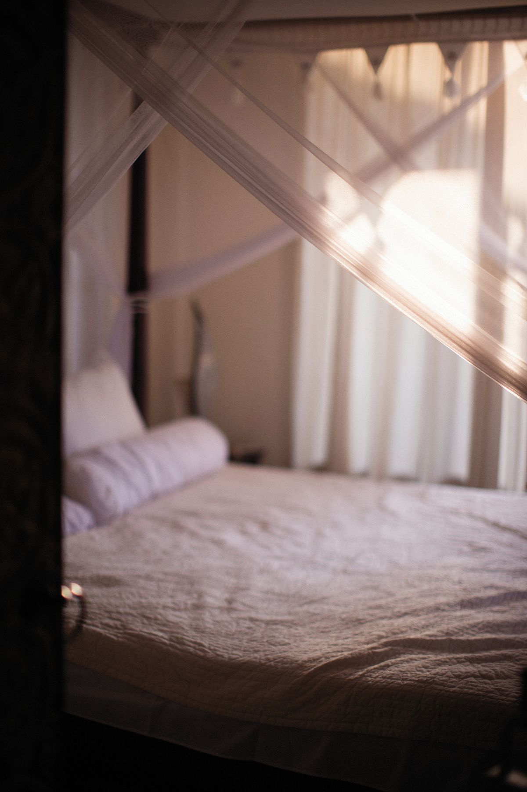
A light canopy draped over the bed turns a small sleeping area into a soft enclosure. Sheer or lightweight fabric hung from a hook above the headboard, or draped over a simple frame, filters the light and adds gentle movement. Keep the fabric pale so the bed still feels airy, and make sure it hangs well clear of lamps and candles.
19. A Slim Nightstand for Tight Spaces
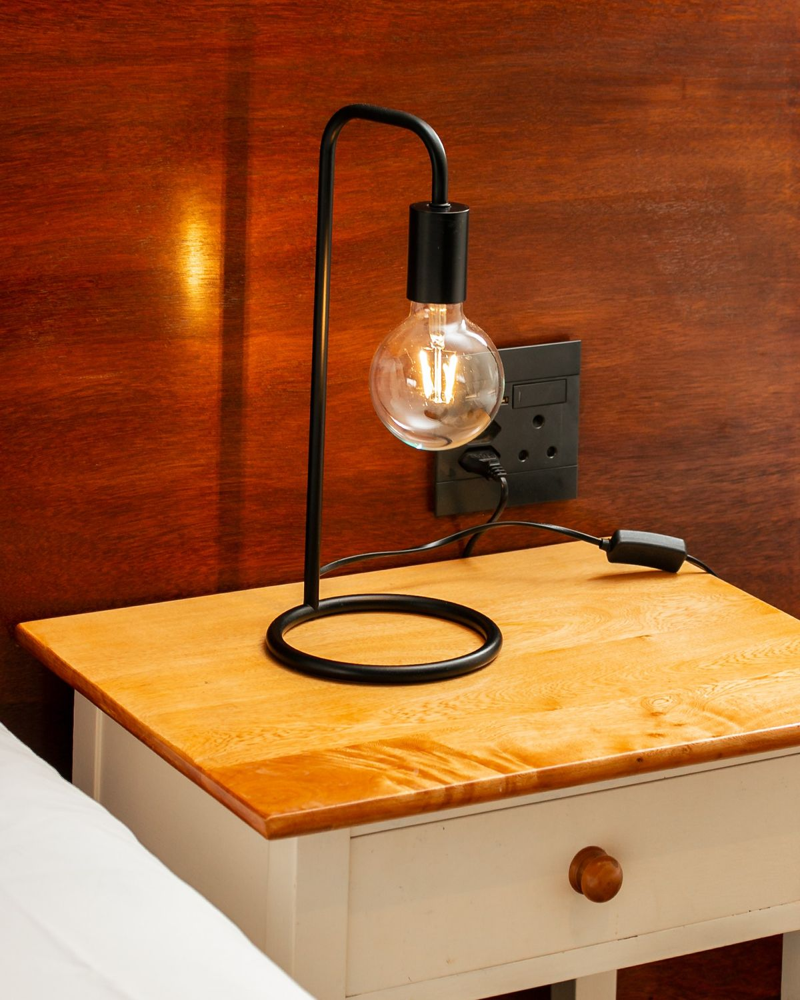
When floor space is tight, a slim nightstand — narrow, with one drawer or one shelf — gives you the essentials without crowding the bed. It only needs to hold a lamp, a book, a glass of water and a phone. Pale wood or a finish that matches the bed frame keeps the small footprint visually quiet, and a drawer hides the clutter that makes small rooms feel messy.
20. Photo String Lights
Clipping favourite photos along a string of small lights combines two cosy ideas in one line. Run the string above the bed or along a shelf, spacing the photos evenly, and let the warm bulbs glow between them. It is personal in a way bought art is not, and in a small room it decorates the wall without frames, holes or bulk.
21. Woven Storage Baskets
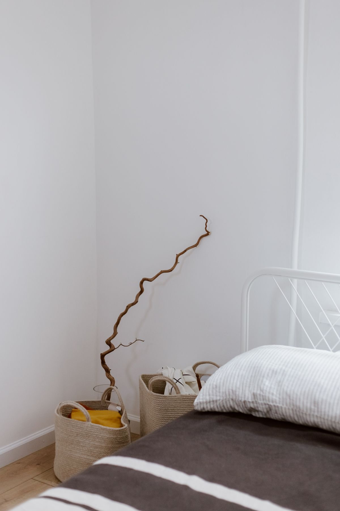
Woven storage baskets hide the everyday clutter of a small bedroom while adding natural texture. Use one for spare throws, one for chargers and cables, and one as a laundry catch-all in the corner. Natural fibres like seagrass, jute or cotton rope suit the warm palette of a cosy room, and baskets with lids or liners look calmest.
22. A Bench or Ottoman at the Foot of the Bed
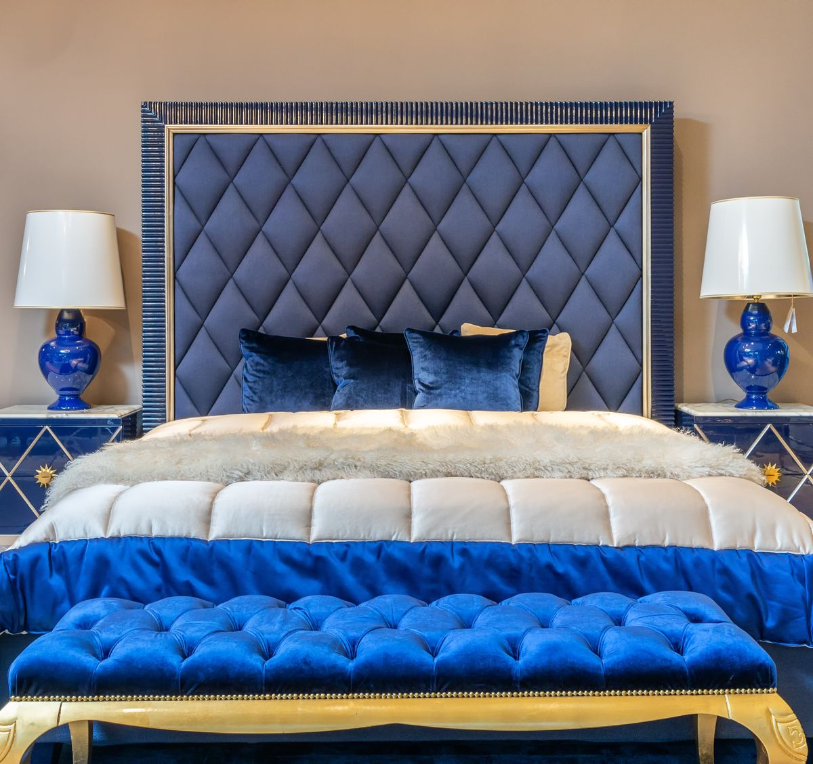
A small bench or padded ottoman at the foot of the bed gives a small bedroom a finished, layered look and a practical seat for dressing. Choose one narrower than the bed so it does not crowd the walkway, and if it opens, store spare bedding inside. An upholstered top in a warm fabric doubles as a soft place to lay out tomorrow’s clothes.
23. Sheer Curtains for Soft Daylight
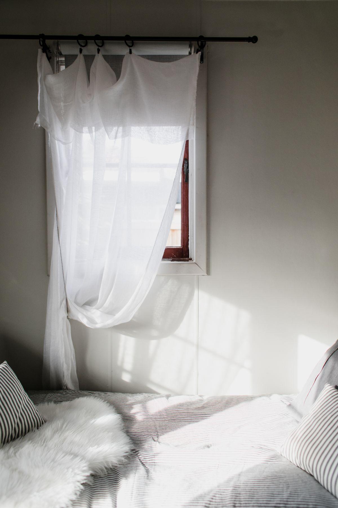
Sheer curtains are the daylight version of cosy: they soften strong sun into a gentle, even light that flatters everything in a small room. Hang them across the whole window so the light is diffused rather than striped, and pair them with heavier curtains or a blind for the evening if you need darkness. White and warm ivory sheers keep the room bright while taking away the glare.
24. A Painted Accent Wall Behind the Bed
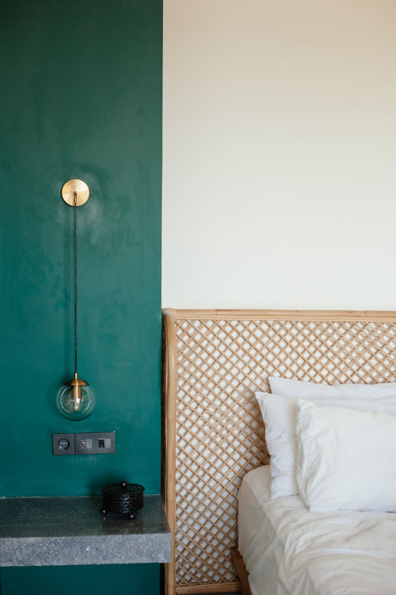
Painting just the wall behind the bed in a deeper, warmer colour gives a small bedroom a cosy backdrop without darkening the whole room. Deep green, warm clay, muted navy or a rich taupe all sit well behind pale bedding. The other walls stay light, so the room still feels open, and the bed becomes the clear focus of the room.
25. Pendant Lights Beside the Bed
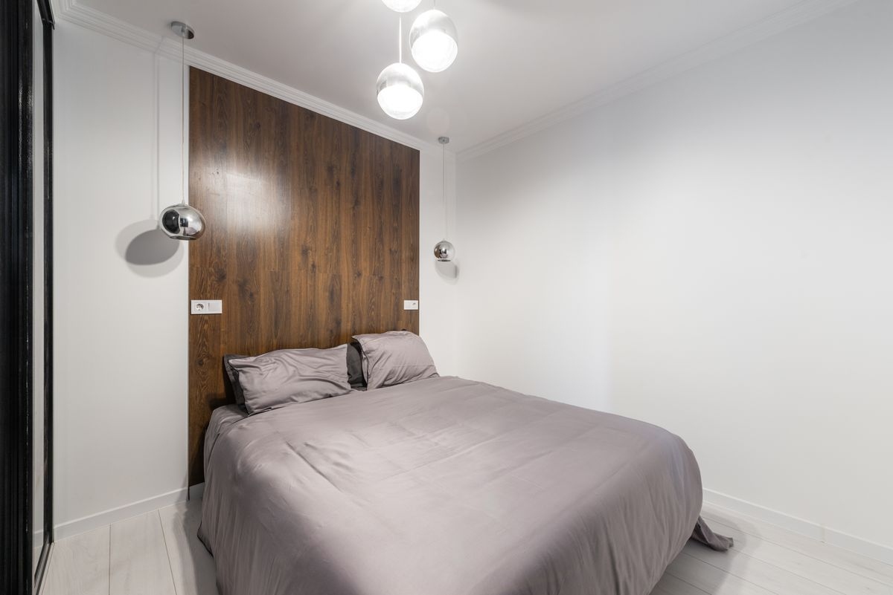
Pendant lights hung low on each side of the bed free the nightstands entirely and frame the bed with warm pools of light. In a small bedroom they also draw the eye upward, which makes the ceiling feel higher. Choose small shades in glass, metal or woven fibre, hang them at roughly shoulder height when sitting up in bed, and use warm-toned bulbs.
26. A Rug Layered Under the Bed
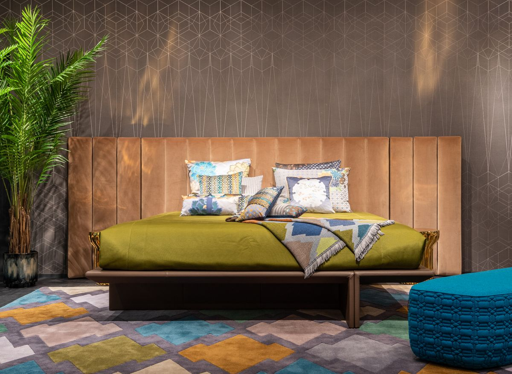
A larger rug layered under the bed — extending out on both sides and at the foot — anchors the whole sleeping area and makes a small bedroom feel planned rather than pieced together. It gives you a soft surface on every side of the bed and quietly separates the sleeping zone from the rest of the room. Choose a low pile so the bed sits steady and doors still swing freely.
27. Clear, Clutter-Free Surfaces
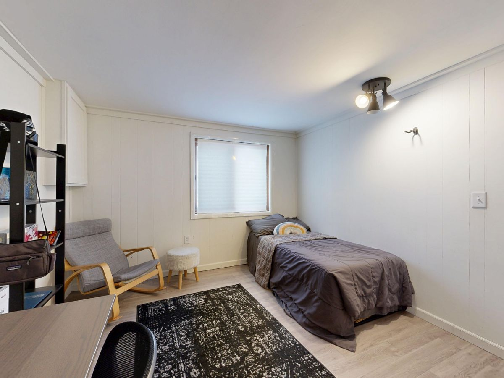
Nothing makes a small bedroom feel calmer faster than clear surfaces. Keep the nightstand to a lamp, a book and one small object, keep the dresser top mostly empty, and give everything else a drawer, box or basket to live in. The room does not need to be bare — it needs breathing room, and in a small space, empty surface is what reads as luxury.
28. Warm Wood Furniture
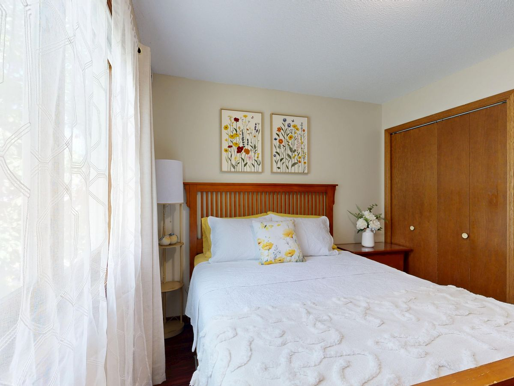
Warm-toned wood — a bed frame, a nightstand, a small dresser — brings natural warmth that painted furniture often cannot. In a small bedroom, keeping the wood tones similar across pieces makes the room feel pulled together, and wood pairs naturally with the creams and beiges of cosy bedding. If a full set is out of reach, even one wooden piece, like a bed frame or a stool, warms the whole room.
29. A Window Seat or Cosy Chair by the Window
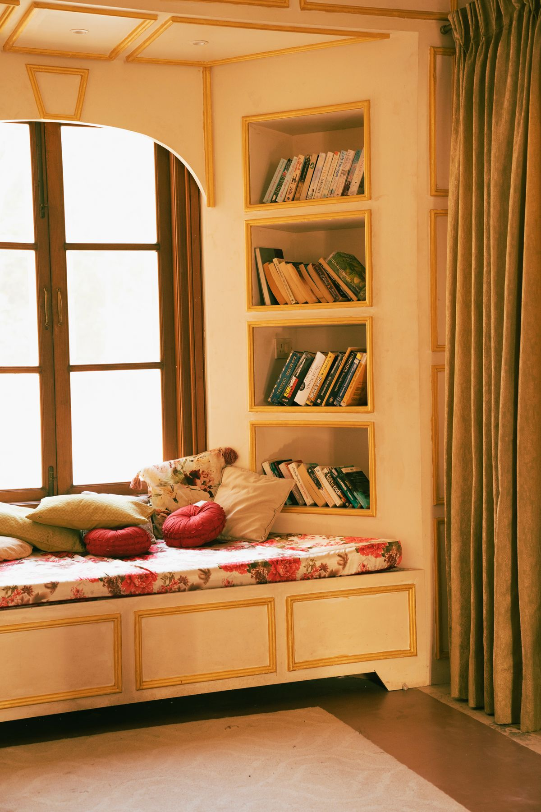
If the window wall has a ledge, a low radiator cover or space for a small bench, a window seat with cushions is the cosiest seat in a small bedroom. Add a seat pad, two cushions and a small throw, and keep a few books in the nook beside it. It uses space that is usually wasted and gives you a daylight spot for reading that is separate from the bed.
30. Crisp White Bedding, Layered Softly
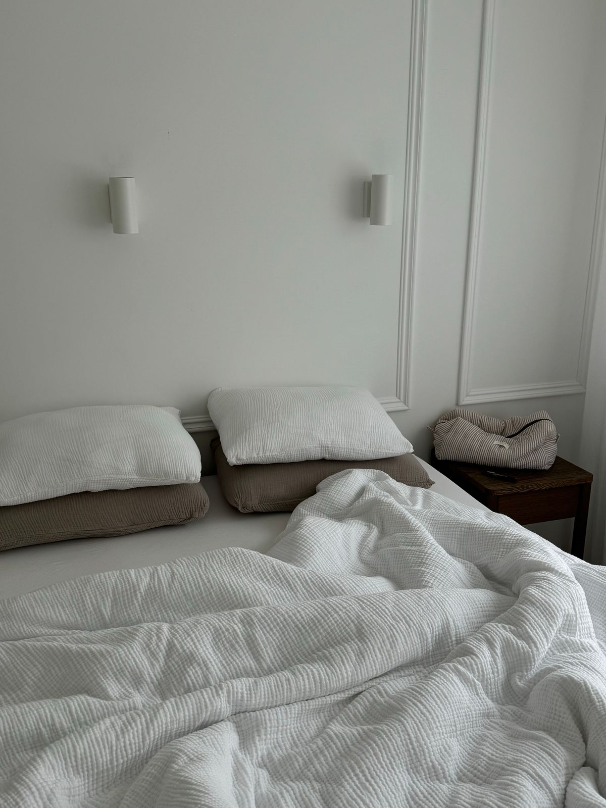
Crisp white bedding is the easiest base for a cosy small bedroom, as long as it is layered softly rather than left flat. A textured white duvet cover — waffle, seersucker or washed cotton — plus a folded throw and cushions in warm neutrals keeps white from feeling cold. White also reflects what light the room has, so the bed, the biggest surface in the room, brightens everything around it.
31. A Woven Wall Hanging or Tapestry
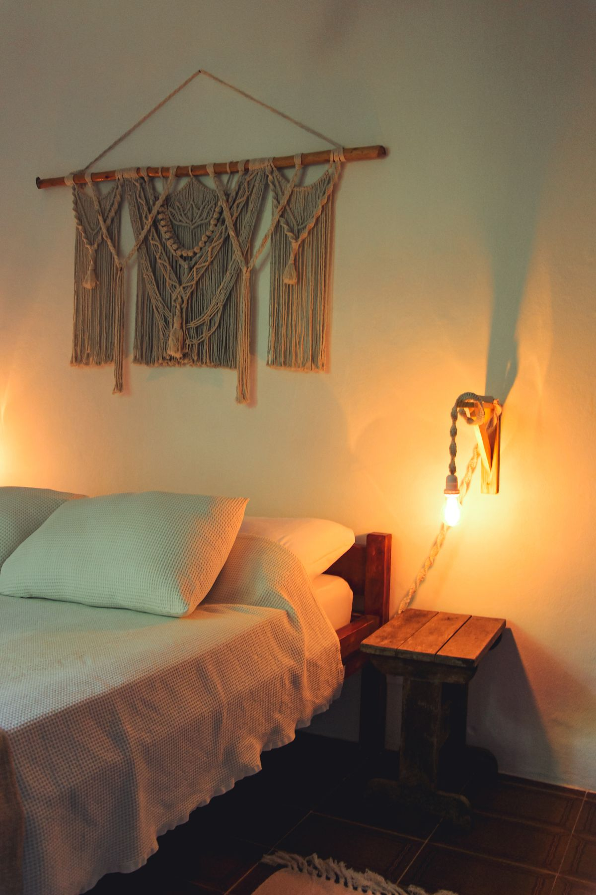
A woven wall hanging or macramé piece above the bed adds softness that a framed print cannot. The threads and fringe bring texture and gentle movement to the wall, and the piece is light, so it hangs easily and suits renters. Choose natural cotton or wool tones to match a warm palette, and let it be the single decorative piece on that wall.
32. A Tiny Vanity or Desk Corner
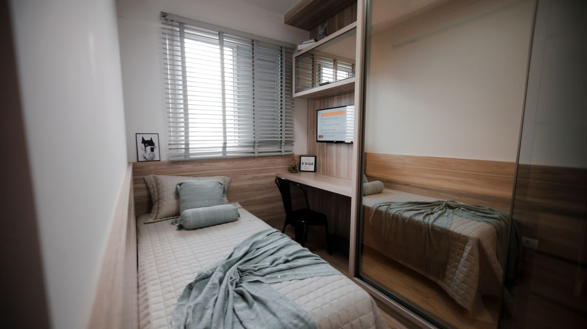
A tiny desk or vanity tucked into a corner gives a small bedroom a second job without needing a second room. A narrow table, a small stool that tucks underneath, a mirror and one lamp are enough. Keep the surface styled like the rest of the room — a small plant, a tray for everyday items — so the corner looks like part of the bedroom, not an office that wandered in.
33. A Bed Tray for Slow Mornings
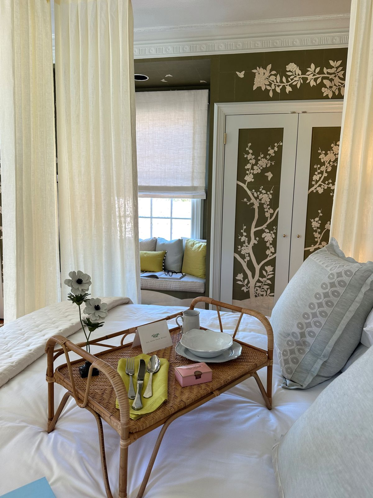
A bed tray makes slow mornings part of the room’s routine: coffee, a book and breakfast balanced safely instead of directly on the duvet. Choose a tray with folding legs and raised edges, and store it leaning beside the wardrobe or under the bed when it is not in use. In a small bedroom it also works as an occasional laptop stand or a steady surface for writing in bed.
34. LED Strip Glow Behind the Headboard
A warm LED strip hidden behind the headboard washes the wall with a soft halo of light and makes the bed feel like the calm centre of the room. Choose warm white rather than coloured light for a bedroom, and fit the strip so the individual dots stay hidden — only the glow should show. It is a modern touch, but used warmly and dimly it is one of the cosiest lights in a small room.
35. Plaid and Seasonal Cushions for Instant Cosiness
Plaid is the pattern of instant cosiness, and it asks almost nothing of a small bedroom. Swap in a plaid throw across the bed or plaid cushion covers when the season turns colder, and the room feels warmer without any other change. Rust, cream, soft brown and muted green plaids suit a calm palette, and because it is only textiles, the whole look stores away in one box when the season ends.
A Few Last Words
Cosiness in a small bedroom is not about how much you add — it is about warmth, texture and calm, repeated in small doses. Start with the bed, fix the light, hide the clutter, and let one or two soft details do the rest. For more small-space and budget ideas, explore the full Bedroom Makeover category.